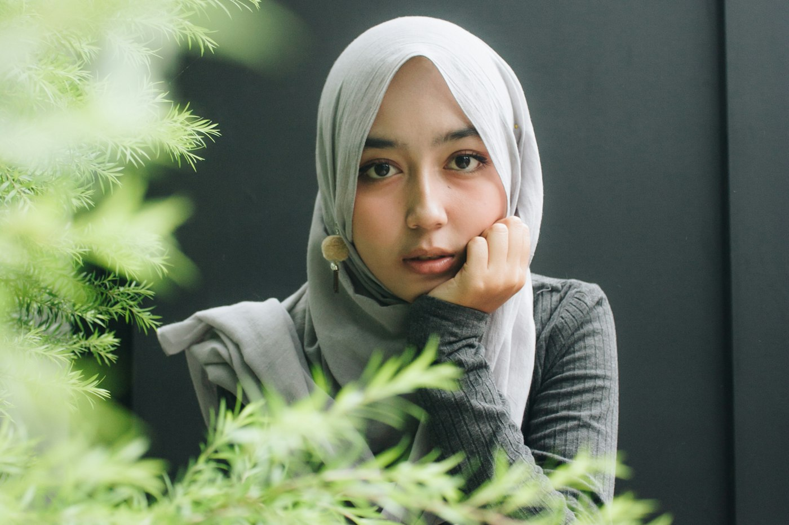

رؤيتنا
مجتمع واعٍ يتمتع بصحة نفسية متوازنة وجودة حياة مستدامة.
جمعية أهلية تأسست في عرعر عام 1444هـ من مبادرة مجتمعية، تقدّم خدماتها مجانًا في الصحة النفسية والتعافي من الإدمان لأهالي منطقة الحدود الشمالية.

قصتنا
في كل جلسة حوار مجتمعي سمعنا التحدي نفسه: حرج يمنع كثيرين من الاعتراف بمعاناتهم النفسية، وغياب نقطة بداية واضحة لطلب المساعدة.
لذلك بادرت سكينة لتكون نقطة الاتصال الأولى، توجّه الأفراد والأسر إلى الخدمات المتاحة، وتنشر الوعي بأن طلب الدعم النفسي قوة لا ضعف. ونقدّم خدماتنا بمشاركة متخصصين متطوعين في المجالين النفسي والاجتماعي.
الأفراد ببساطة لا يعرفون إلى أين يذهبون للحصول على المساعدة، ولا يشعرون بالأمان تجاه مشاركة مشاعرهم.
مجتمع واعٍ يتمتع بصحة نفسية متوازنة وجودة حياة مستدامة.
تعزيز الصحة النفسية من خلال برامج توعوية وخدمات استشارية وشراكات مجتمعية فاعلة تسهم في بناء مجتمع أكثر استقرارًا ووعيًا.
قيمنا
نقدّم خدماتنا وفق أسس علمية ومعايير مهنية واضحة.
نعمل لخدمة مجتمع الحدود الشمالية وتعزيز استقراره النفسي.
نطوّر برامجنا باستمرار، ونقيس أثرها على المستفيدين.
استشاراتك وبياناتك في سرية تامة، ولا نستخدم إلا الإحصاءات العامة.
نبحث عن طرق جديدة وقريبة من الناس لنشر الوعي النفسي.
نبني شراكات مع الجهات الحكومية والمجتمعية لتحقيق أثر أكبر.
ما نسعى إليه
المساهمة في تحسين نوعية الخدمات العلاجية المقدمة للمرضى النفسيين.
رفع مستوى وعي المجتمع بالوقاية من الأمراض النفسية والعقلية.
توعية المتعرضين للأزمات بالطرق الصحية لتجنب آثارها النفسية.
تقديم الرعاية النفسية للمتعرضين للأزمات النفسية والاجتماعية.
تعزيز الرعاية العلاجية والإرشادية للمرضى النفسيين.
تثقيف أهالي المرضى النفسيين للتعايش مع المرضى.
تأهيل كوادر صحية متخصصة لرعاية المرضى النفسيين.
تأهيل المرضى النفسيين للاندماج في المجتمع.
إيجاد الحلول المناسبة لمأوى المرضى النفسيين المحتاجين لذلك.
نشر الوعي لدى المجتمع بالمرضى النفسيين وكيفية التعامل معهم.
تقديم الدعم بكافة أشكاله لمتعاطي المخدرات والمتعافين وذويهم.
تأهيل المتعافين من الإدمان للاعتماد على الذات وتمكينهم.
التشارك بفاعلية مع فئات المجتمع لرفع الوعي بخطر المخدرات والوقاية منها.
الخطة الاستراتيجية
أهداف خطتنا الاستراتيجية المعتمدة من مجلس الإدارة. اضغط على أي هدف لعرض مبادراته.
مستهدفاتنا
من الخطة التشغيلية لعام 2026.

من نخدم
توعويًا لعموم أفراد المجتمع، ورعويًا للحالات التي تحتاج عناية الجمعية.
دعم ورعاية مجانية في رحلة التعافي، مساندةً للجهود الحكومية في هذا المجال.
المانحون، والجهات الحكومية والخاصة وغير الربحية، والمتطوعون والسفراء.
شركاء النجاح
الجهة المشرفة، واتفاقية منزل منتصف الطريق، وفعاليات اليوم العالمي للصحة النفسية
داعم المرحلة الأولى من منزل منتصف الطريق
شراكة مبرمة مع الجامعة
مشاريع مدعومة من الصندوق
جهة التسجيل والترخيص
شراكات في البرامج التوعوية بالمنطقة
سمو أمير منطقة الحدود الشمالية الأمير فيصل بن خالد بن سلطان يثمّن جهود جمعية سكينة في برامج الدعم النفسي وسدّ الفجوة في خدمات الصحة النفسية.
الهيكل التنظيمي
من الجمعية العمومية إلى فرق العمل اليومية، لكل مستوى دوره وصلاحياته.
11 عضوًا · أعلى سلطة في الجمعية
5 أعضاء · الدورة 2024–2027
سهام حوير البناقي
أسماء حمود الشمري
مديرة البرامج والمشاريع
نوف نهار العنزي
محاسبة الجمعية
استقبال الطلبات والتحقق من الاستحقاق
تنظيم الفرص التطوعية ومتابعة المتطوعين
فريق العمل
اعتمد المركز الوطني لتنمية القطاع غير الربحي تشكيل مجلس الإدارة في يونيو 2024، وتستمر دورته حتى مايو 2027.
رئيس مجلس الإدارة
تقود المجلس في دورته الحالية 2024–2027، وتمثّل الجمعية أمام الجهات الرسمية.
نائب رئيس مجلس الإدارة
عضو مجلس الإدارة
عضو مجلس الإدارة
عضو مجلس الإدارة
المدير التنفيذي
مديرة البرامج والمشاريع
منذ يناير 2025محاسبة الجمعية
منذ نوفمبر 2024العضوية
عضوية الجمعية مفتوحة للعموم من الأفراد والجهات، وتشاركنا بها في رسم مسار سكينة.
اطلب الانضمامبيانات الجمعية

تبرّع، أو تطوّع، أو كن سفيرًا لسكينة في مجتمعك.